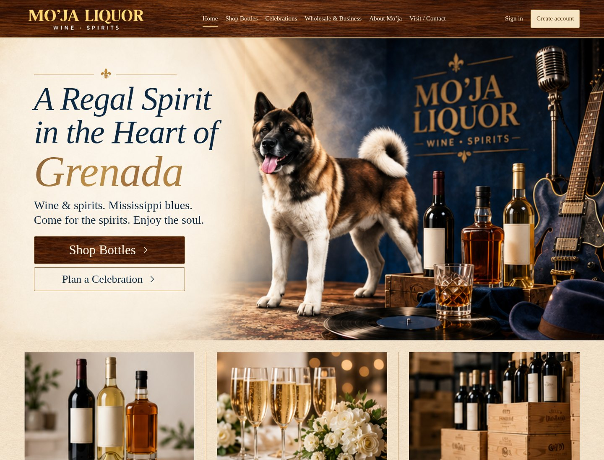
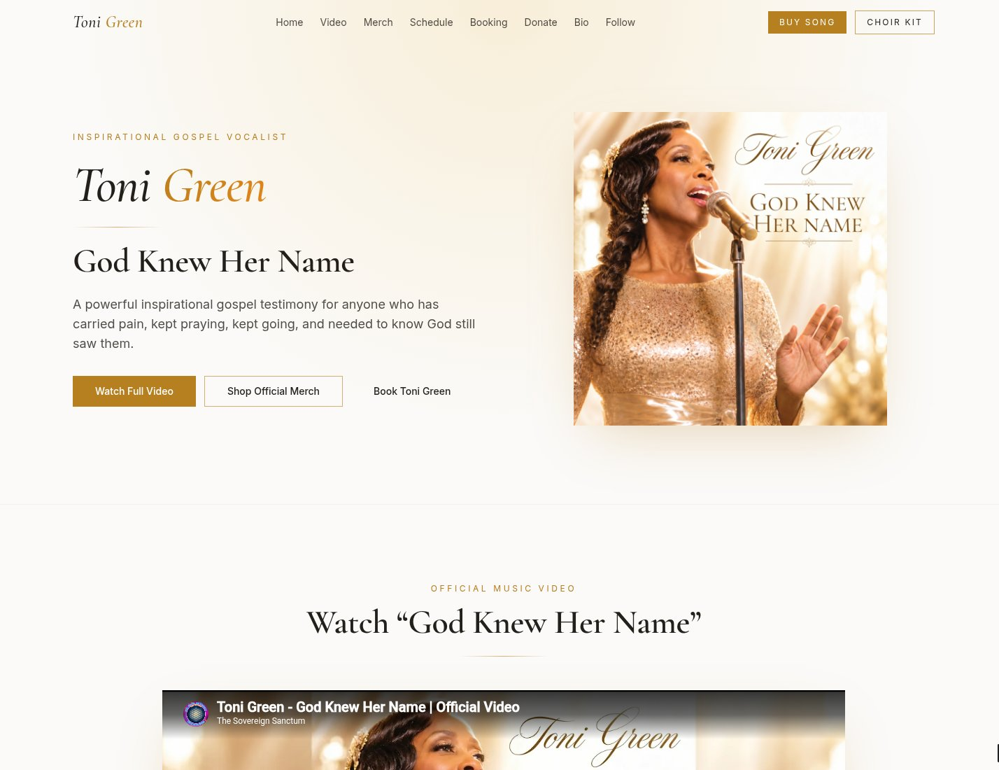
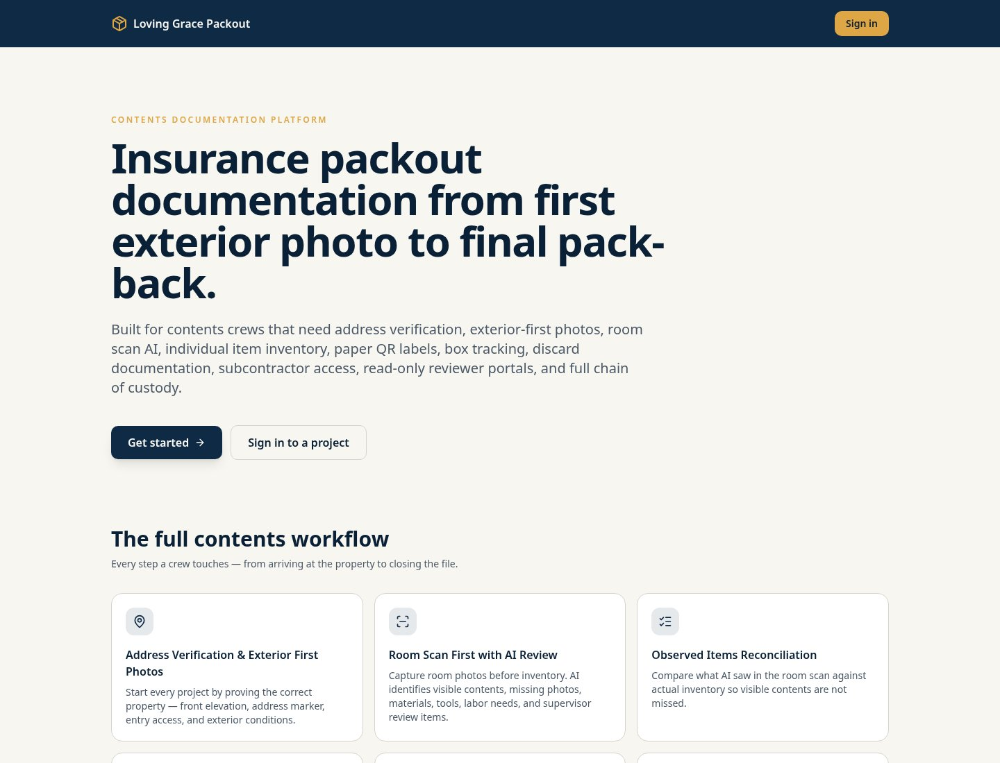
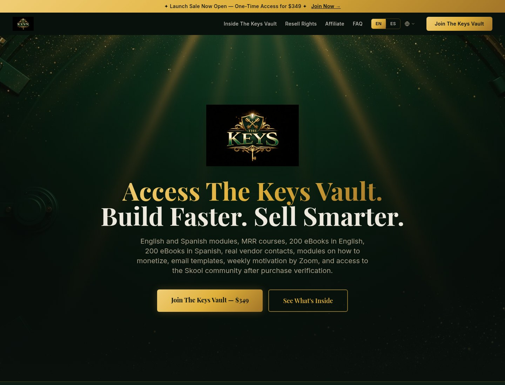
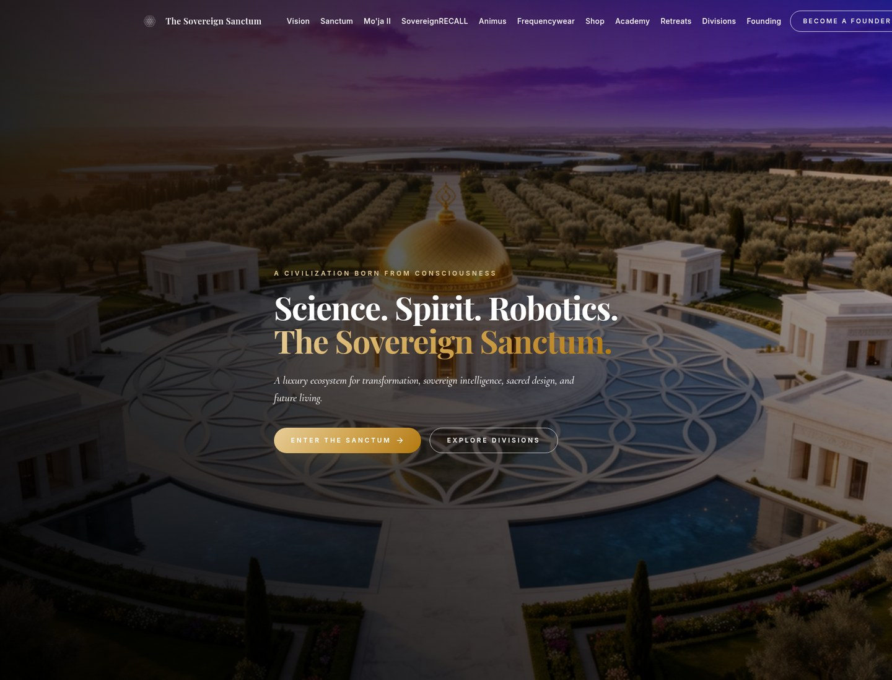
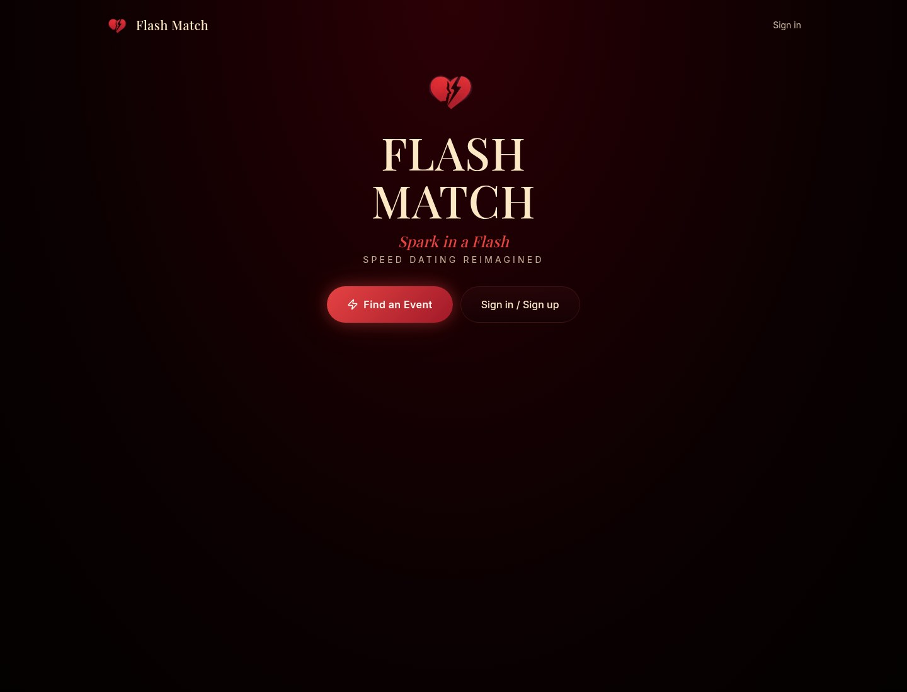
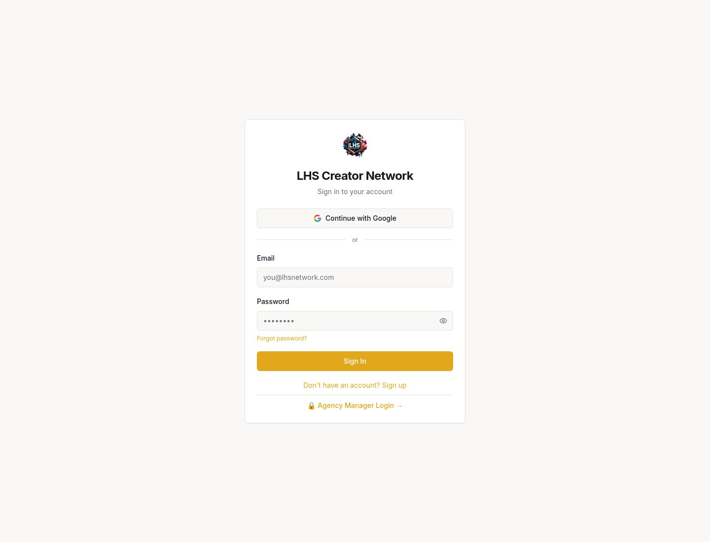

Tools that help artists and producers work with their recordings, including stem separation, editing, and AI-assisted music creation. Built to support the artist’s voice, and used only with the artist’s permission.
Research and development
Loving Grace Presence
Holographic presence research: technology that can extend how a person is represented, while the person keeps final authority. Work on this line has been invited to pitch on the NSF SBIR path, with Mississippi MS-FAST Phase 0 in progress. This is not an award.
Selected projects
Sites and software we have built
Screenshots from recent website and software builds, including client sites and our packout software. These are examples of work, not live links.

Mo'ja Liquor website
A public-facing website for a Mississippi package store, designed and built for the shop's own brand, gift orders, and pickup-ready shopping.

Toni Green artist website
An official artist site for vocalist Toni Green, built to present her music, merch, booking, and the release of God Knew Her Name.

Loving Grace Packout software
Contents inventory, packout, storage, packback, condition documentation, and claims-reporting software for insurance contents work.

The Keys Vault website
A resource site for courses, eBooks, and tools, with materials in English and Spanish.

The Sovereign Sanctum website
A public site for The Sovereign Sanctum, presenting its science, spirit, and robotics work.

Flash Match
A speed-dating web app for timed match rounds and event sign-up.

LHS Creator Network
A creator-network roster and CRM, shown at its public sign-in page.